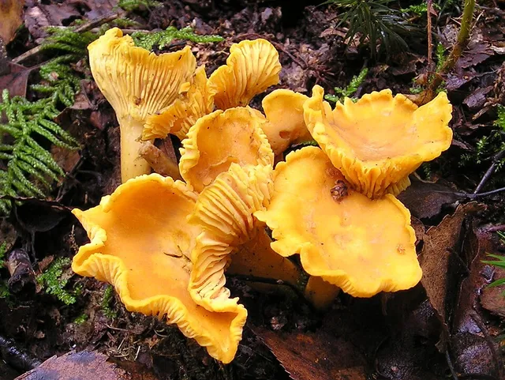

Starters & snacks
Chanterelle toast (Eierschwämmli-Toast)
Chanterelle toast (Eierschwämmli-Toast) is made with wild chanterelle.

How do you make chanterelle toast (eierschwämmli-toast)?
Chanterelles in cream on toast, a Swiss restaurant classic.
Wild ingredients
- Chanterelle (Cantharellus cibarius): in season July to October
Watch the recipe

Video: CALLEkocht - Omas Rezepte on YouTube